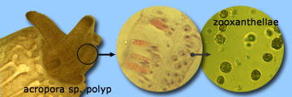
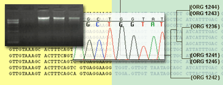

Corals are like greenhouses growing millions of symbiont algae inside their cells which provide the coral with more than 90% of its daily energy requirement. Coral reef ecosystems generate substantial social and economic benefits for more than 500 million people, but as global temperatures escalate, corals are experiencing thermal stress at increasing frequencies and intensities and are being eliminated at alarming rates.
Coral skeletons are highly scattering in the upper ~200 μm of the skeleton layer (measured as ‘microscopic’ reduced coefficient, µSʹ,m ) and effectively amplify and homogenize the ambient light-field of their endosymbiotic dinoflagellates. This effect enhances productivity of the symbiosis, but also contributes to the likelihood of catastrophic dissociation as densities of light-absorbing symbionts decrease and light levels for the remaining symbionts rapidly increase.
Understanding the factors involved in the failure of this symbiosis, which has repeatedly caused widespread mass mortality of ecosystem engineering coral species, has become increasingly critical because of the accelerating effects of global climate change.
The coral can be viewed as an intricate optical machine and its interaction with visible light is one of the key factors in the coral life cycle and bleaching episodes. The coral consists of two compartments: 1) the living tissue where the host photoprotective pigments and the symbiont algae with all its photosynthetic pigments are contained, and 2) the skeleton, a highly reflective limestone structure secreted by the coral polyp in a species-specific manner and affected by local environmental factors.
This design facilitates the incident light to travel through the coral tissues and be collected by the photosynthetic apparatus of the algae, and increases the amount of light available to the algae due to the light backscattered by the skeleton. We are studying the light transport properties of coral skeleton and tissue containing photoprotective pigments for coral species showing resistance and susceptibility to bleaching.
This work measures optical properties of coral skeletons using Low-coherence enhanced backscattering (LEBS) spectroscopy developed at the Backman laboratory for early cancer detection. Microscopic light-scattering was measured in over 150 coral skeletons from the 1893 World’s Fair in Chicago (Field Museum coral collection) and the Smithsonian Institution and we found that low- µSʹ,m corals are at higher risk of bleaching and dying. We also bleached 10 coral species that varied in their light-scattering properties by increasing thermal and/or light stress (in collaboration with the Shedd Aquarium) and demonstrated that low- µSʹ,m corals bleach at higher rate and severity than high- µSʹ,m corals.
Massive coral bleaching episodes have been increasing for the past 30 years throughout the tropics; eight major bleaching events have been reported worldwide due to increase of the sea surface temperature. After a bleaching episode, most coral colonies bleach completely and die; however, certain coral colonies show resistance to bleaching and/or a remarkably fast recovery once the bleaching event subsides.
We are particularly interested in studying the intrinsic properties of corals that lead to their differential reaction to bleaching and their varied recovery response. Towards this goal we are developing a two-level approach:
First, we are studying specific optical properties of the stony corals to understand the role that the coral’s tissue and skeleton play during bleaching. To some degree the coral can be viewed as an intricate optical machine and its interaction with visible light is one of the key factors in the coral life cycle and bleaching episodes. The coral consists of two compartments: 1) the living tissue where the host photoprotective pigments and the symbiont algae with all its photosynthetic pigments are contained, and 2) the skeleton, a highly reflective limestone structure secreted by the coral polyp in a species-specific manner and affected by local environmental factors.
This design facilitates the incident light to travel through the coral tissues and be collected by the photosynthetic apparatus of the algae, and increases the amount of light available to the algae due to the light backscattered by the skeleton. We are studying the light transport properties of coral skeleton and tissue containing photoprotective pigments for coral species showing resistance and susceptibility to bleaching.
Second, we are characterizing the coral-algae association at the cellular and genetic level to establish indicators of susceptibility to bleaching. In fact, some coral species with high zooxanthellae densities or with certain populations of zooxanthella known to be more heat-resistant than others, may be more resistant and survive better to bleaching.